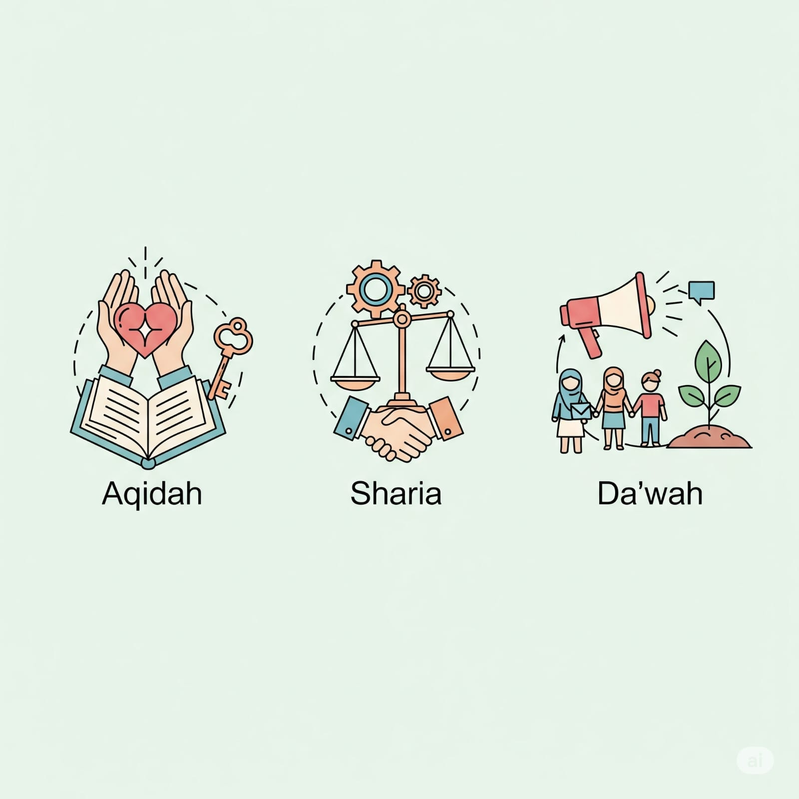

Felix Siauw, seorang ustaz pendakwah juga penulis yang namanya kerap terdengar di telinga. Aktif menulis sejak tahun 2010 hingga telah menerbitkan banyak buku. Salah satu bukunya yang baru dirilis pada awal tahun kemarin berjudul Islam is Me. Buku inilah yang akan menjadi subjek pembahasan kita.
Islam is Me, atau apabila ditulis tanpa spasi menjadi Islamisme yang berarti ajaran Islam, sebagaimana yang tertera pada KBBI. Entah ini kebetulan semata atau memang ada maksud tersembunyi dari penulis.
Cover depannya menggambarkan isi buku. Simpel, tak banyak kata, tapi menarik. Isinya pun begitu pula, malah lebih menarik. Gaya penulis yang khas, dimana di setiap buku-bukunya menghadirkan ilustrasi yang mendukung, gambar-gambar lucu, bahkan juga komik strip di antara lembarnya. Serta bagaimana beliau menuangkan gagasan dengan mengajak pembaca untuk berpikir, menjadikan buku ini istimewa di antara yang lainnya.
Bahasa yang digunakan cenderung ringan, sehingga cocok dengan anak-anak muda. Selain itu, banyaknya penggunaan antologi yang relate dengan kehidupan sehari-hari memudahkan pembaca untuk menangkap maksud yang ingin disampaikan oleh penulis. Dan kelebihan lain dari buku ini, argumen yang disampaikan selalu disertai dalil dan data yang akurat.
Meski buku ini sebagus itu, tetap saja tidak ada yang sempurna. Masih ada beberapa typo penulisan, walau itu semua masih bisa dimaklumi.
Dalam buku ini, secara tersurat penulis mengajarkan bagaimana menjadi seorang Muslim yang baik. Namun, secara tersirat beliau juga ingin kita berpikir hingga dapat menemukan jawaban dari “Mengapa harus Islam?”
Pohon kurma menjadi topik utama buku ini. Dimana ia diibaratkan seperti seorang muslim yang baik. Akar yang kokoh sebagai akidah. Batang yang tegak sebagai syariat. Dan buah yang bermanfaat layaknya dakwah.
Mengapa akar diibaratkan sebagai akidah? Karena ia harus kokoh agar bisa menjadi landasan dua hal di atasnya. Selain itu, mereka sama-sama tak kasat mata. Seperti akar yang tersembunyi dalam tanah, seperti itu pula akidah (iman) di dalam hati seorang Muslim. Akidah tidak bisa dinilai dari dhahiriyah seseorang saja. Karena yang salat belum tentu akidahnya sudah benar, tapi yang akidahnya benar sudah pasti salat.
Kemudian, karena akidah tak kasat mata, maka untuk memperbaikinya diperlukan hal yang tak kasat mata pula, bukan dengan pembiasaan seperti amal ibadah, melainkan dengan tafakur dan tadabur.
Penulis menyebutkan ada tiga hal yang perlu untuk ditafakuri. Pertama, menyadari kelemahan diri. Sehingga kita memerlukan Zat yang lebih superior. Atau dalam bahasa awwamnya yaitu Tuhan. Kedua, eksistensi Tuhan. Benarkah Tuhan itu ada? Kalaupun memang Tuhan itu ada, lalu siapakah Tuhan itu? Pertanyaan terakhir ini menjadi poin ketiga sekaligus kesimpulan dari rentetan pertanyaan ini.
Beliau terus melanjutkan pembahasan mengenai akidah hingga lebih dari setengah buku, yang mana buku ini memiliki 254 halaman. Seolah ingin menyampaikan pada pembaca urgensi akidah dan kedudukannya bagi seorang muslim.
Setelah selesai dengan akidah yang benar, lalu kemudian disusul penjelasan mengenai ibadah yang baik dan dakwah yang bagus. Begitulah tiga landasan untuk menjadi muslim yang baik. Hal ini berbanding terbalik dengan landasan dalam berdakwah.
Apabila kita ingin berdakwah, maka sampaikanlah yang bagus terlebih dahulu, baru kemudian yang baik dan benar. Mengapa? Karena orang-orang akan lebih sulit menampik sebuah keindahan, sebuah hal yang bagus, ketimbang menolak kebenaran.
Sering kita jumpai, pendakwah muslim yang dakwahnya sepi peminat. Bisa jadi karena yang mereka sampaikan alih-alih menggunakan kata yang indah, justru terkesan menghakimi.
Di akhir buku ini, beliau membagikan saran dan nasihat dalam berdakwah. Agar para pendakwah bisa menyampaikan dakwah yang bagus, dan tentunya baik lagi benar.
Kesimpulan besar dari buku ini memang tiga landasan dasar yang sudah disebutkan tadi. Hanya saja, cara penyampaian penulis yang mengajak pembaca berpikir, akan menghasilkan sebuah konklusi dari pertanyaan “Mengapa harus Islam?”. Maka dari itu, ada satu kalimat yang tepat untuk menggambarkan seluruh isi buku ini, sebagaimana judul tulisan ini, Berpikirlah maka akan Engkau Temukan Islam sebagai Jawaban.
← Kembali© 2025 IKADU MESIR. All Rights Reserved.